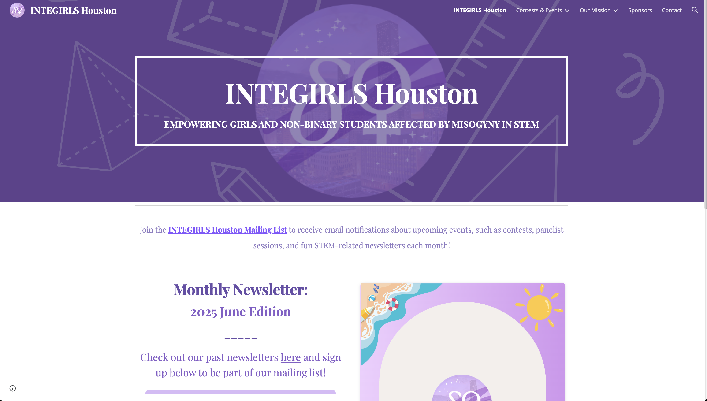
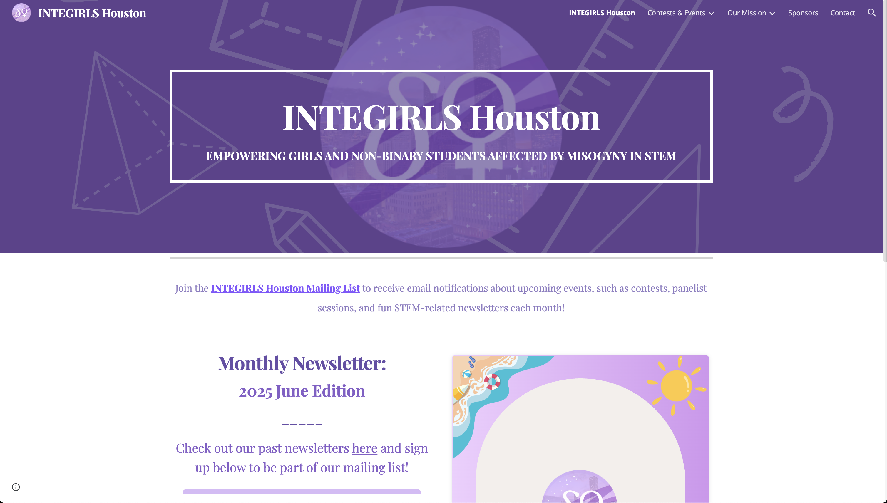

Multimodal Computational Psychometric Modeling of Human Attitudes and Behavioral Intentions
Research Field: Human-AI Interaction, Human-Centered NLP, AI/Machine Learning, Large Language Models
Role: Undergraduate Researcher
Affiliation: National University of Singapore (NUS) Computing, AI for Social Good Lab
Dates: March 2025 - present
Tools Used: Python, Causal Knowledge Graphs, GPT, Quantitative Analysis, Text-to-Speech/Speech-to-Text, Machine Learning
- Engineering a multimodal conversational AI chatbot by integrating large language models with Text-to-Speech and Speech-to-Text systems for real-time sentiment extraction from text and voice data.
- Developing quantitative pipelines to process and extract nuanced sentiment features, supporting advanced analysis of conversational interactions.
- Applying machine learning and causal graph algorithms to model and identify drivers of mental health stigma from multimodal datasets.


 
